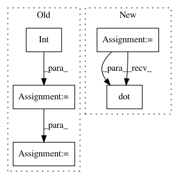

e30b50ff849a417b8e70d121edd2e85f0565eee1,data/data_loader.py,NoiseInjection,inject_noise_sample,#NoiseInjection#Any#Any#Any#,59
Before Change
noise_src = load_audio(noise_path)
noise_offset_fraction = np.random.rand()
noise_dst = np.zeros_like(data)
src_offset = int(len(noise_src) * noise_offset_fraction)
src_left = len(noise_src) - src_offset
dst_offset = 0
dst_left = len(data)
while dst_left > 0:
copy_size = min(dst_left, src_left)
np.copyto(noise_dst[dst_offset:dst_offset + copy_size],
noise_src[src_offset:src_offset + copy_size])
if src_left > dst_left:
dst_left = 0
After Change
noise_len = get_audio_length(noise_path)
data_len = len(data) / self.sample_rate
noise_start = np.random.rand() * (noise_len - data_len)
noise_end = noise_start + data_len
noise_dst = audio_with_sox(noise_path, self.sample_rate, noise_start, noise_end)
assert len(data) == len(noise_dst)
noise_energy = np.sqrt(noise_dst.dot(noise_dst)/noise_dst.size)
data_energy = np.sqrt(data.dot(data)/data.size)
data += noise_level * noise_dst * data_energy / noise_energy
return data
In pattern: SUPERPATTERN
Frequency: 3
Non-data size: 5
Instances
Project Name: SeanNaren/deepspeech.pytorch
Commit Name: e30b50ff849a417b8e70d121edd2e85f0565eee1
Time: 2017-09-13
Author: jinserk.baik@gmail.com
File Name: data/data_loader.py
Class Name: NoiseInjection
Method Name: inject_noise_sample
Project Name: pymc-devs/pymc3
Commit Name: 5e329a5e3e9453ae0800ab438d2fa9f991f35a00
Time: 2017-06-02
Author: junpeng.lao@unifr.ch
File Name: pymc3/examples/LKJ_correlation.py
Class Name:
Method Name:
Project Name: pymc-devs/pymc3
Commit Name: 2f5075be900731232fa6b4bd5a4990b143307df2
Time: 2017-04-18
Author: ColCarroll@users.noreply.github.com
File Name: pymc3/tests/test_step.py
Class Name: TestStepMethods
Method Name: check_trace